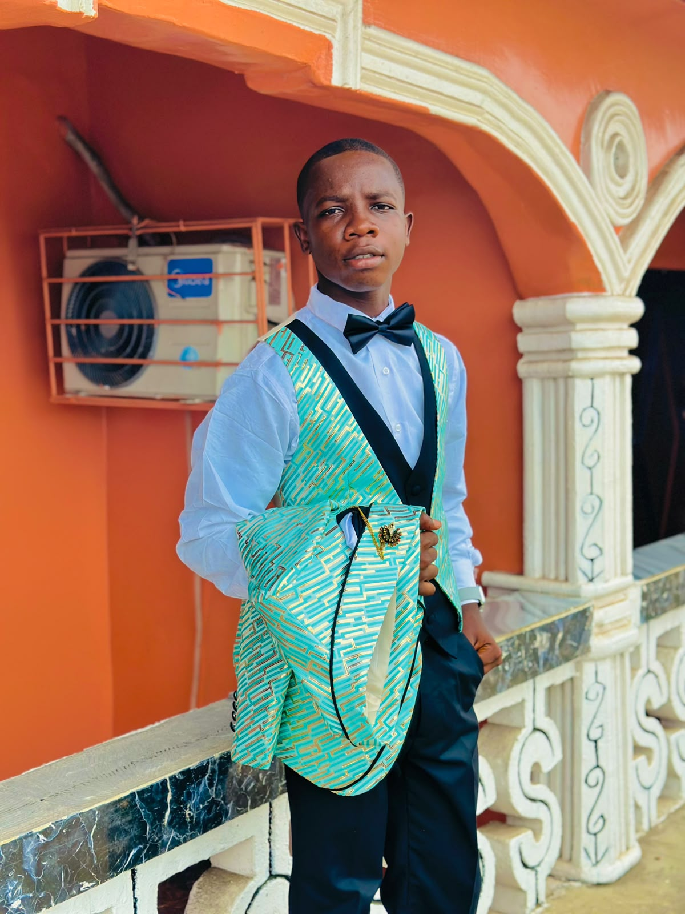
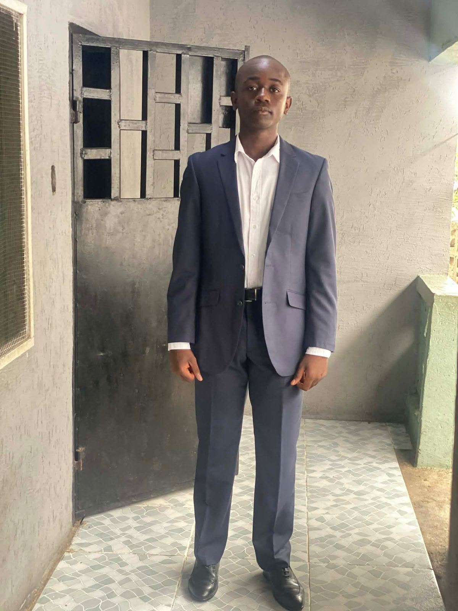

Evidence of Christ Resurrection Ministry was born out of a divine encounter. On the 22nd of July 2025, God spoke to His Servant Abel D. Blackie and laid upon his heart a burden to raise up a people who would walk in truth, love, and the power of the Holy Spirit. The vision was not conceived in man, but downloaded from heaven. It was a clear, God-inspired mandate to preach the Gospel, raise disciples, and demonstrate the Kingdom of God in word and deed. The Chosen Team In obedience to the voice of the Lord, His Servant Abel D. Blackie was led by the Holy Spirit to choose two men to labor with him in the vision: Clifton Marshall Atkins Z. Gbeadah God specifically placed them together for this work. Like Aaron and Hur who held up Moses’ hands, Clifton Marshall and Atkins Z. Gbeadah were appointed to stand with Servant Abel D. Blackie to build, to pray, and to carry the weight of the ministry from its foundation. The Mandate From day one, the ministry was established on 3 pillars revealed by God: 1. The Word Teaching sound doctrine and the uncompromised truth of Scripture 2. Prayer: Seeking God’s face and the power of the Holy Spirit 3. Service: Reaching souls, healing the broken, and lifting communities for Christ Our Foundation Scripture _“For we are God’s handiwork, created in Christ Jesus to do good works, which God prepared in advance for us to do.”_ — Ephesians 2:10 Today Since its founding on 22nd July 2025, this God-inspired ministry continues to advance with one goal: to obey God fully and to make Jesus known. We honor the calling upon His Servant Abel D. Blackie, and we stand together with Clifton Marshall and Atkins Z. Gbeadah as co-laborers in the vineyard, believing that what God started, He will complete. _“Unless the Lord builds the house, the builders labor in vain.”_ — Psalm 127:1
To teach the uncompromised Word of God, preach repentance, and lead souls into an authentic relationship with the resurrected Savior, Jesus Christ.
To build a vibrant global online fellowship of believers empowered by the Holy Spirit, walking in faith, righteousness, and resurrection life.
Trusting in the complete work of Christ and His promises.
Preaching the pure, unadulterated Holy Scriptures.
Fostering genuine brotherhood and fellowship in Christ.
Believing in continuous communion and breakthrough through prayer.

Servant of God
Dedicated to sharing the resurrection power of Jesus Christ to the ends of the earth.

Servant of God
Committed to strengthening the ministry through leadership, service, and Christian fellowship.
Servant of God
Passionate about sharing the Gospel and helping others grow in their relationship with Jesus Christ.
You can connect with us directly by joining our global WhatsApp Community on the home page, where live meeting links and daily devotionals are shared.
You can fill out the Prayer Request form on our homepage. All requests are sent straight to our prayer team at ecrloveschrist@gmail.com.
Yes! Everyone from all nations and backgrounds is welcome to join our fellowship and grow with us in Christ.